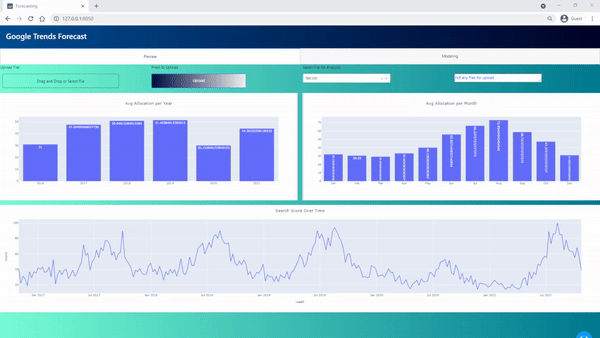
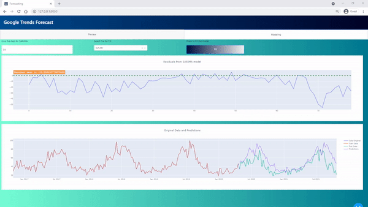

In this project we are demonstating the functionality of SARIMA model (Seasonal Autoregressive Integrated Moving Average)
We are using data from Google Trends, in which we can find the searching score for specific words. We can always upload at the application new files for more studies.
The first Tab of the application is working as an observatory for the data selected. First we analyze by year then by month in order to understand
the existance of any trend.
In the second tab we can feed the model with the data in an effort to create the best model by manipulating the step of the seasonal analysis.
This projects purpose is to demonstate the deterministic technique of SARIMA, and all the outcoming functionalities comming with an application of this type.


You want to see more?
Docker
Download and run the Docker image of the project
Github
You may visit the gihub repository of the projectt
Google Trends
Easy accesible data from Google Trends, try to download your desired data